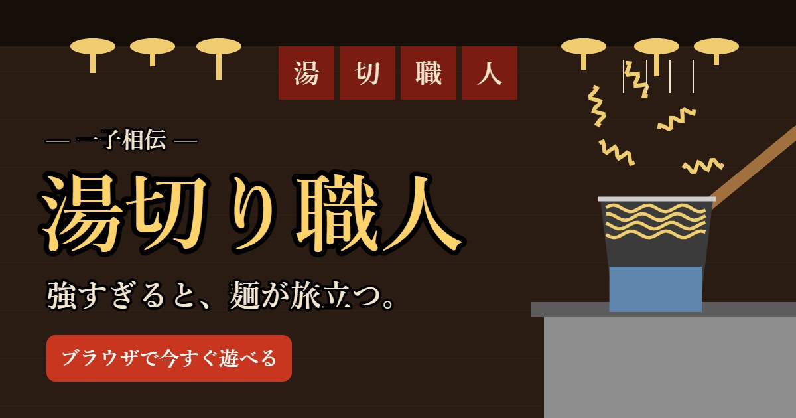

湯切り職人 〜一子相伝〜
スワイプでラーメンの湯を切る職人シミュレーター。振りの強さ、止めのキレ、一定のリズム。三つを極めて「一子相伝の継承者」を目指そう。強すぎると、麺が天井へ旅立ちます。
スマホ推奨・1プレイ約15秒日常のあるあると、無駄に本格的な職人芸をゲームに。ブラウザですぐ遊べます。

スワイプでラーメンの湯を切る職人シミュレーター。振りの強さ、止めのキレ、一定のリズム。三つを極めて「一子相伝の継承者」を目指そう。強すぎると、麺が天井へ旅立ちます。
スマホ推奨・1プレイ約15秒